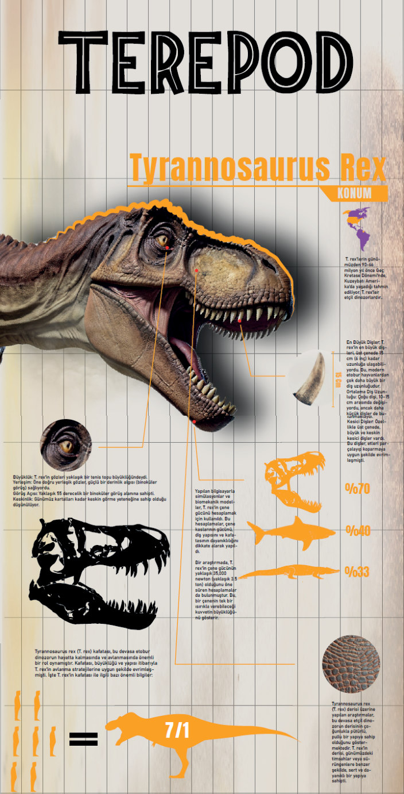
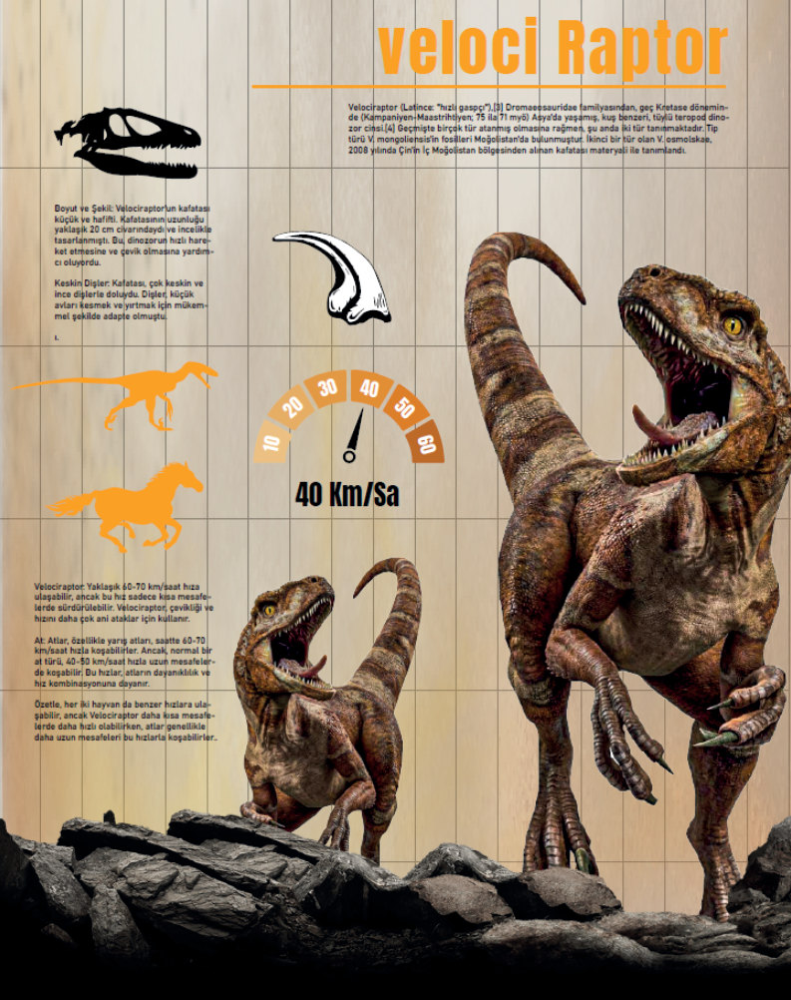

Bilgi grafiği
Terepod
Tyrannosaurus Rex ve Velociraptor’u boyut, kafatası, diş yapısı ve hız verileriyle karşılaştıran iki parçalı infografik. Turuncu siluetler ve ölçek ikonları, karmaşık bilgiyi bir bakışta okunur kılıyor.
- Yıl
- 2024
- Tür
- Lisans projesi
- Kapsam
- Poster, ikon seti

